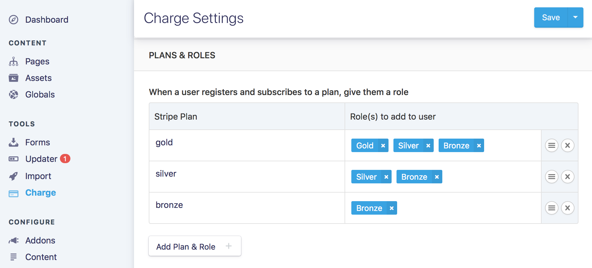

After my tutorial a couple of weeks ago about building a membership site with Statamic, which only focussed on how to protect content from non-users, making no distinction between the different “types” of users possible, I’ve since had a few questions about how to build out the rest of the site. Most were related to the templating, and how you’d add more specific restrictions around the content; so here’s a few patterns that I’ve found useful when building membership sites with Statamic.
One of the first things you’ll want to do is display a different menu or navigation depending on whether a user is logged in or not. Where they are logged out, you obviously will want to provide them links to login or register. If they’re logged in then a link to their dashboard, protected content or a “Log out” button would be a better use of the same space.
It’s worth noting that this pattern actually goes a good way to protecting your content just by obscurity. If links to the protected content are rendered to all users (including crawlers from search engines) then those protected pages become known.
This isn’t much of an issue with a system like Statamic where pages are server-rendered. Your private content becoming public is still reliant on an error in your templating or with Statamics internals, even if the URL of the content is known. However, as we’re all human and prone to mistakes from time to time, additional security through obscurity is a good habit to get into, even if alone it’s not enough.
The primary mechanic of this pattern is the {{ user }} tag which operates as a pair — {{ user }} … {{ /user }}. Inside those tags you may display data about the user, or use {{ if no_results }} to check for a users existence.
As a complete pattern, it might look something like this:
{{ user }}
{{ if no_results }}
<a href="../../login/index.html">Login</a>
{{ else }}
<span>Welcome {{ first_name }}!</span>
<a href="../../dashboard/index.html">Dashboard</a>
<a href="{{ user:logout_url }}">Logout</a>
{{ /if }}
{{ /user }}
Here’s a link to Statamics docs on the {{ user }} tag.
The most common question I was asked was how to distinguish between different types of users when making content private. Protecting content in Statamic at the content-level as we did previously is a fairly simple method. If you’re a “User” then you can access any content protected in this way — it’s a black and white kind of protection with no nuance. In the case that you wanted to offer a free but limited membership with an addional paid tier, this obviously isn’t going to work for you.
Luckily, Statamic & Charge have an easy to implement solution. We already know about Statamics Roles, which can be used in the templates to control rendering of content. Charge has the ability to automatically assign users to a Role when they subscribe with a particular Stripe plan.
We’ve set up a Role for our members last time, so head back to that tutorial if you can’t remember how. For assigning Roles to Stripe plans, head to Configure > Addons in the Control Panel, and then open the Charge settings page from the three dots drop-down on the right hand side. There you can configure how Stripe pans will map to Statamic Roles. Here’s an example:
In this scenario, we have three subscription tiers each with a different price and level of access to out content. gold-members have access to everything, so get all three of our Roles. silver-members get access to the Silver Role, and the Bronze Role. bronze-members predictably just get the Bronze Role, and access to only some of the content.
Setting up many Roles per subscription type might seem verbose, but it allows for a great deal of flexibility. This example is a simple cascading set of permissions where higher tiers get more and more access. However, if you had three different subscriptions that gave access to three different categories of content but all required access to some shared content you could set up the roles to suit.
More importantly, this method of assigning many Roles makes templating much easier and less verbose, as we’ll see in a moment. We use Statamics {{ user:is }} tag to check what Roles the user has before rendering a part of the template. By adding all the lower Roles to users on the higher subscription tiers, you only have to check for the minimum access needed when restricting content in a template.
Here’s an example of what I mean:
{{ user:is role=“gold-member” }}
<!-- Content only for Gold members -->
{{ /user:is }}
{{ user:is role=“silver-member” }}
<!-- Content only for Gold & Silver members -->
{{ /user:is }}
{{ user:is role=“bronze-member” }}
<!-- Content for Gold, Silver & Bronze members -->
{{ /user:is }}
Instead of having to do multiple checks in the {{ user:is }} tag, you can just check for the minimum needed. The alternative would look like this for a Bronze member.
{{ user:is role="gold-member" || role="silver-member" || role="bronze-member" }}
The {{ user:is }} tag also has a shorthand syntax which looks like this and, to me at least, is much clearer in its intention.
<!-- Shorthand syntax -->
{{ is:gold-member }}
...
{{ /is:gold-member }}
All of the above only addresses what happens if you request a page that you have access to. What happens if a user requests a page that they shouldn’t? Statamic also has the opposing {{ user:isnt }} which can be used to display a “Not Authorised” message or similar like so:
{{ user:isnt role="gold-member" }}
<span> Please upgrade to the Gold membership to get access to this.</span>
{{ /user:isnt }}
However, I prefer to make use of Statamics {{ redirect to="/upgrade" }} tag within this code block. Whilst it’s bit of an odd experience (a double page load) remember that this isn’t the “happy-path” if a user has managed to request a page they can’t access.
The benefits of this redirect, rather than just a simple message displayed on the same page, is that I can design this page too encourage the current user to upgrade their subscription, and use this page whenever someone attempts to access higher tiered content. Another interesting benefit is that by using my web analytics tools, I can see requests for this page; a high number of which might indicate that I’ve got a bug in my templates and a link displaying when it shouldn’t.
The last pattern is one that I’ve only needed once before, but it demonstrates the flexibility that Statamic offers. The use-case in this instance was a dealer of fine art wanted to list certain pieces on his website that were only viewable to certain members. They were referred to as “private-rooms”.
The solution comprised of a Users fieldtype added to the entry in the collection, much the same way that you’d an an author to a blog post, and a template tag that requested only entries in the collection with that users id.
The fieldset for the item would look like this:
title: Items
taxonomies: false
fields:
content_area:
type: textarea
display: Content
private_for:
type: users
display: Private for
mode: tags
And the template would look like this:
{{ user:profile }}
<h1>Private items for {{ first_name }} {{ last_name }}</h1>
{{ collection:items :private_for:is="id" }}`
<!-- Item here -->
{{ /collection:items }}
{{ /user:profile }}
By adding the {{ user:profile }} tag-pair, we get access to the id variable, which we use when filtering the collection, which creates an index of all the items in this users “private-room”.
I hope that the above patterns give you an idea of how you can use Statamic to meet your needs. I’ve found that with just a few very simple tags, Statamic lets you create some very complex templates and logic once you’ve got your head around it. Whenever I get stuck on a problem, I just head to Statamics index of tags to work out what data I have available, and how I can juggle those tags to get the result I want.